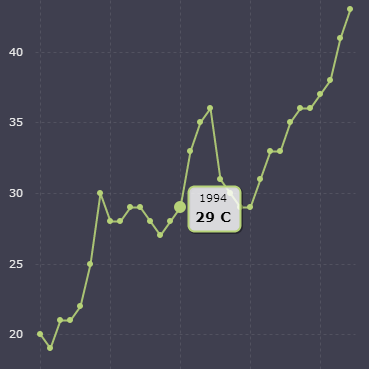
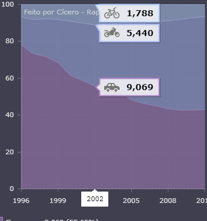
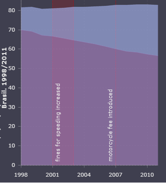
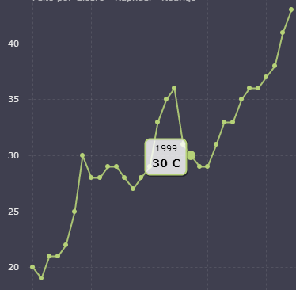
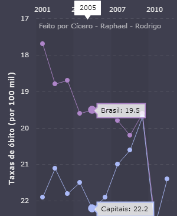

 Entre 1980 e 2011, foram registrados perto de um milhão de óbitos nos diversos tipos de acidentes de trânsito acontecidos no país. O SIM/MS contabilizou, nesse período, exatas 980.838 mortes em acidentes nas vias públicas. Nos anos finais da década de 90, registra-se uma inflexão na evolução da mortalidade por acidentes de trânsito – ver tabelas e gráficos a seguir – que permite caracterizar três grandes períodos. Até 1997, o SIM registra fortes aumentos no número de mortes, principalmente entre 1993 e 1997...
 Passado os efeitos imediatos do novo código de trânsito de 1997, em virtude de mobilizações, campanhas e atividades educativas nas ruas, já no ano 2000 observamos a retomada da mortalidade com preocupantes aumentos nos números e nas taxas. Assim, nos 11 anos entre 2000 e 2011, o número de mortes nas vias públicas passou de 28.995 para 43.256, o que representa um aumento de 49,2%. As taxas, considerando o aumento da população, também cresceram 31,7% entre 2000 e 2011...
 Em geral, para comparar dados relativos a locais ou épocas diferentes, são utilizadas taxas que tomam como base a população de cada local ou período. Um indicador mais acurado para comparar acidentes de trânsito seria o tamanho da frota de veículos em circulação. Obviamente, um país cuja população possui poucos automóveis vai ter taxas de acidentes bem inferiores aos de outro país com grande número de carros. Isso não acontece porque os primeiros sejam melhores condutores, ou as ruas tenham...
 Nossa fonte principal para o tratamento das hospitalizações causadas pelos acidentes de trânsito é o Sistema de Informações Hospitalares (SIH) do MS. Desenvolvido na década de 1970, visando controlar os pagamentos dos serviços prestados pelos hospitais contratados. Assim, conservando sua finalidade de atender o processo de remuneração das internações hospitalares financiadas pelo SUS, atualmente possui uma gigantesca base de dados, abrangendo as mais diversas atividades do setor, seja da rede ...
 Apesar do aumento da densidade e do volume do tráfego, a evolução decenal das mortes no trânsito das capitais foi bem menor que a registrada nas UF como um todo, onde o crescimento na década foi de 41,7% e as taxas aumentaram 27%. Já nas capitais, o número de óbitos em acidentes aumentou 9,2% e as taxas até caíram levemente: -2,3%. Esse diferencial pode ser atribuído à concentração da fiscalização, campanhas educativas, investimentos...